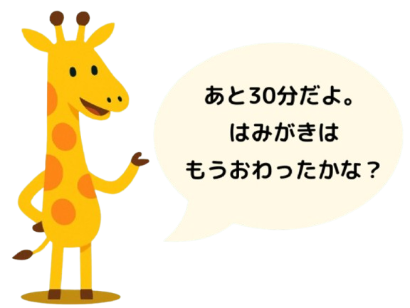

「あと、30分だよ」
「あと、30分だよ」

TimeSenseとは？
もう「早くして！」を何度も言わなくても大丈夫。
朝のバタバタもキャラクターの声かけでスムーズに。
TimeSenseは、忙しさの中でも、親子にちょっとした“余白”と“笑顔”を届ける、"育児のパートナー"アプリです。
『アナログ時計と残り時間の視覚的な表現』と、『個性豊かなキャラクターによる声かけ』で、子どもの"時間感覚"と"自ら動く力"を自然に育みます。
朝のバタバタ、
思わず出ちゃうこんなセリフ…
やさしくサポートします。
TimeSenseの特徴
TimeSenseの画面と声かけ設計は、子どもの成長や心理学の研究結果に基づいています。
今何時？あと○分？
がひと目でわかる

知育デザインのアナログ時計＋タイマー表示で、残り時間がパッとわかる
キャラが
声でサポート

パパやママ・保護者の代わりに、キャラクターが残り時間や行動を声かけしてサポート
朝・夜・宿題で
キャラを切り替え

時間帯やシーンに応じたキャラや音声を選べるから、子どもも飽きずに続けられる
6つのカラーテーマ


声かけサンプル
お子様のお好みや性格に合わせてキャラ音声を選択できます。
シンプルな残り時間アナウンスと、シーンに合わせた多彩な音声も。
「あと〇分」や”行動を促す声かけ”を行ってくれます。
無料で使える4体のキャラクター
Luma・Pico・Milo・Totoの基本の声かけが使えます。LumaとPicoのサンプルを、下のボタンから試聴できます。
 Luma
Luma Pico
Pico Milo
Milo Toto
Toto
TimeSense+ シーンに合わせた声かけ
プレミアムでは、基本の声かけに加えて、朝の支度・宿題・寝る時間などのシーンに合わせた音声が使えます。
 Milo宿題
Milo宿題 Totoおやすみ
Totoおやすみ
活用シーン

「早くして！」
の代わりに
残り時間とキャラの声で、朝の支度がスムーズに。何度も声をかける必要がなくなり、子どもと過ごす時間がより穏やかに。

集中スイッチON
タイマーで区切ることで、やる気もメリハリもアップ。「あと5分！」というキャラクターの声かけが、子どもの集中力を高めます。

時間の切り替えに
まだまだ切り替えが苦手なのは成長段階の子どもたちには当たり前。ゲーム・遊び・お片付け等の切り替えをシーンに合わせてサポートします。
開発者より
このアプリは、時間の切り替えが苦手な息子と忙しい朝の時間にいつもバタバタしていた私たち夫婦が、少しでも笑顔で1日を始められるように…という想いから生まれました。
「あと○分」が感覚でわかるように。かわいいキャラたちが、親の代わりにやさしく声をかけてくれます。
あなたの声を代弁してくれる"育児の相棒"です。
TimeSenseは、「タイマー × 教育 × 優しさ」で、子どもが"自分で動ける"力を、毎日少しずつ育てていくアプリです。
自分の子にも、世界中の親子にも使ってもらえたら嬉しいです。レビューやご意見もお待ちしています！

FAQ
よくあるご質問をまとめました。
気になる項目をタップすると、回答と確認手順が開きます。
Q. 画面が動かない / ボタンが押せません
A. チャイルドロックが有効になっている可能性があります。
TimeSenseでは、お子さまが誤ってタイマーを停止したり設定を変更したりしないように、画面操作を一時的に制限できるチャイルドロック機能を用意しています。
画面が反応しない場合、まずチャイルドロックが有効になっていないかご確認ください。
確認方法
- メイン画面右上の歯車アイコンを確認してください
- 歯車アイコンの右下に鍵マークが表示されている場合、チャイルドロックが有効です
解除方法
- 右上の歯車アイコンを長押ししてください
- 数秒後に設定画面が開きます
- メニュー一覧からチャイルドロックを選択してください
- チャイルドロックをOFFにしてください
ご注意ください
- チャイルドロック中は、一部の画面操作ができません
- アプリの故障ではありません
まだ解決しない場合
チャイルドロックが有効になっていない場合や、上記で解決しない場合は、端末固有の不具合の可能性があります。hello@syncraft.dev へメールでお問い合わせください。
- ご利用端末名
- OSバージョン
- アプリバージョン
Q. 音が出ません / 音声ガイドが再生されません
A. 端末の設定、またはアプリ内の設定が影響している可能性があります。
TimeSenseでは、キャラクターによる音声ガイドや効果音を利用できます。音が出ない場合、多くは端末設定やアプリ内設定が原因となっています。
確認ポイント
- 端末がマナーモードや消音モードになっていないかご確認ください
- Bluetoothイヤホンやスピーカーに接続されていないかご確認ください
- メイン画面右上の歯車アイコンからサウンド設定を開き、音声ガイドや効果音がOFFになっていないかご確認ください
- 選択した言語の音声パックが必要な場合は、通信環境が安定した状態で再度お試しください
ご注意ください
- 一部言語では、まだ音声に対応していない場合があります
- 音声パックのダウンロードには通信環境が必要です
まだ解決しない場合
上記を確認しても改善しない場合は、不具合の可能性があります。アプリ内の「アプリのフィードバック」メニューからお問い合わせください。
- ご利用端末名
- OSバージョン
- アプリバージョン
- ご利用中の言語設定
Q. タイマーが途中で止まってしまいます
A. 端末の省電力設定により、アプリが自動的に停止している可能性があります。
TimeSenseでは、タイマー実行中もできるだけ安定して動作するよう設計していますが、特にAndroid端末では、端末側の省電力設定によってアプリの動作が制限される場合があります。
確認ポイント
- 省電力モードが有効になっていないかご確認ください
- TimeSenseがバッテリー最適化の対象になっていないかご確認ください
- バックグラウンド動作が制限されていないかご確認ください
Android端末をご利用の場合
一部メーカーの端末では、通常より強い省電力制御が行われることがあります。特に Samsung Electronics、Xiaomi Corporation、OPPO の端末では影響を受けやすい場合があります。
ご注意ください
- iPhone / iPad ではこの問題は起こりにくくなっています
- Android端末では、メーカーごとに設定項目が異なる場合があります
まだ解決しない場合
上記をご確認いただいても改善しない場合は、不具合の可能性があります。アプリ内の「アプリのフィードバック」メニューからお問い合わせください。
- ご利用端末名
- OSバージョン
- アプリバージョン
- タイマーが停止した状況（何分後に止まるかなど）
Q. 通知を設定したのに通知が届きません
A. 端末の通知設定や省電力設定が影響している可能性があります。
TimeSenseでは、設定した時間に合わせて通知を送ることができます。通知が届かない場合、多くは端末側の設定によって通知が制限されています。
確認ポイント
- 端末側でTimeSenseの通知が許可されているかご確認ください
- おやすみモードや集中モードが有効になっていないかご確認ください
- 省電力モードが有効になっていないかご確認ください
Android端末をご利用の場合
バッテリー最適化やバックグラウンド動作の制限により、通知が遅れたり正常に届かないことがあります。端末メーカーによって設定方法が異なる場合があります。
ご注意ください
TimeSenseの通知機能は、アプリだけではなく端末側の設定にも影響されます。特にAndroid端末では、機種によって通知の動作に差がある場合があります。
まだ解決しない場合
上記をご確認いただいても改善しない場合は、アプリ内の「アプリのフィードバック」メニューからお問い合わせください。
- ご利用端末名
- OSバージョン
- アプリバージョン
- 通知を設定した時間
- 通知が届かなかった状況
Q. 他の端末にデータを引き継げません / データは同期されますか？
A. 現在、TimeSenseは端末ごとにデータを保存しており、端末間の同期には対応していません。
TimeSenseでは、お子さまが安心して利用できるよう、安全性とプライバシーを優先し、アカウント登録やクラウド同期機能を使用していません。そのため、データはご利用中の端末内にのみ保存されます。
現在同期に対応していないデータ
- プロフィール設定
- スタンプカードの進行状況
- ルーティン設定
- 各種設定情報
ご注意ください
- iPhone ⇔ iPad
- iPhone ⇔ Android
- Android ⇔ Android（別端末）
- 機種変更時のデータ移行
いずれの場合も、データは自動共有されません。
購入情報について
有料プラン（TimeSense+）の購入情報は、同じストアアカウントをご利用の場合、復元できる場合があります。アプリ内の購入復元をお試しください。
※プロフィールやスタンプなどのデータ自体は復元されません。
まだ解決しない場合
データが消えたように見える場合や、ご不明な点がある場合は、アプリ内の「アプリのフィードバック」メニューからお問い合わせください。
- ご利用端末名
- OSバージョン
- アプリバージョン
- 発生している状況
Q. 無料版と TimeSense+（有料版）の違いは何ですか？
A. TimeSenseは無料でもご利用いただけますが、一部機能は TimeSense+ にてご利用いただけます。
TimeSenseでは、基本的なタイマー機能は無料でご利用いただけます。より便利にご利用いただきたい方向けに、有料プラン TimeSense+ をご用意しています。
無料版でできること
- 基本的なタイマー機能
- キャラクター音声ガイド
- ルーティン機能（一部制限あり）
- プロフィール機能（一部制限あり）
- スタンプカード機能
※広告が表示される場合があります。
TimeSense+ でできること
- 複数プロフィールの利用
- ルーティン登録数の拡張
- 一部機能制限の解除
- 広告の制限 / 非表示
- 今後追加されるプレミアム機能へのアクセス
ご案内
まずは無料版でお試しいただき、お子さまに合っていると感じた場合に TimeSense+ をご検討ください。最新の内容はアプリ内の購入画面をご確認ください。
Q. 購入したのに TimeSense+ が使えません
A. 購入情報がまだ反映されていないか、ストアアカウントが異なっている可能性があります。
TimeSense+ を購入したにもかかわらず有料機能が利用できない場合、購入情報が正常に反映されていない可能性があります。
確認ポイント
- 購入時と同じストアアカウントでログインしているかご確認ください
- アプリ内の TimeSense+ メニューから購入復元をお試しください
- Wi-Fi または通信環境を確認し、アプリの再起動後に再度ご確認ください
ご注意ください
- iPhone → Android への機種変更
- Android → iPhone への機種変更
ストアが異なるため、購入情報は共有されません。
まだ解決しない場合
上記を確認しても改善しない場合は、アプリ内の「アプリのフィードバック」メニューからお問い合わせください。
- ご利用端末名
- OSバージョン
- アプリバージョン
- 購入したプラン名
- 購入日時（わかる範囲で問題ありません）
Q. サブスクリプション（定期購入）を解約したいです
A. サブスクリプションの解約は、アプリ内ではなく、ご利用中のストアからお手続きいただく必要があります。
TimeSenseの定期購入は、アプリではなく、各ストア（App Store / Google Play）で管理されています。そのため、TimeSenseアプリ内から解約することはできません。
iPhone / iPad をご利用の場合
- 設定アプリを開いてください
- 一番上の Apple Account をタップしてください
- サブスクリプションを選択してください
- TimeSense を選択してください
- サブスクリプションをキャンセル を選択してください
Android をご利用の場合
- Google Play Store を開いてください
- 右上のアカウントアイコンをタップしてください
- お支払いと定期購入 を選択してください
- 定期購入 を選択してください
- TimeSense を選択してください
- 定期購入を解約 を選択してください
ご注意ください
- アプリを削除しただけでは解約されません
- 解約後も、契約期間終了まではそのままご利用いただけます
- 解約が完了すると、次回の自動更新は行われません
アプリをダウンロード
まずは無料で体験可能！
プレミアムな「Timesense+」では広告なし＆シーンに合わせた多彩なキャラ音声がすべて使えます。